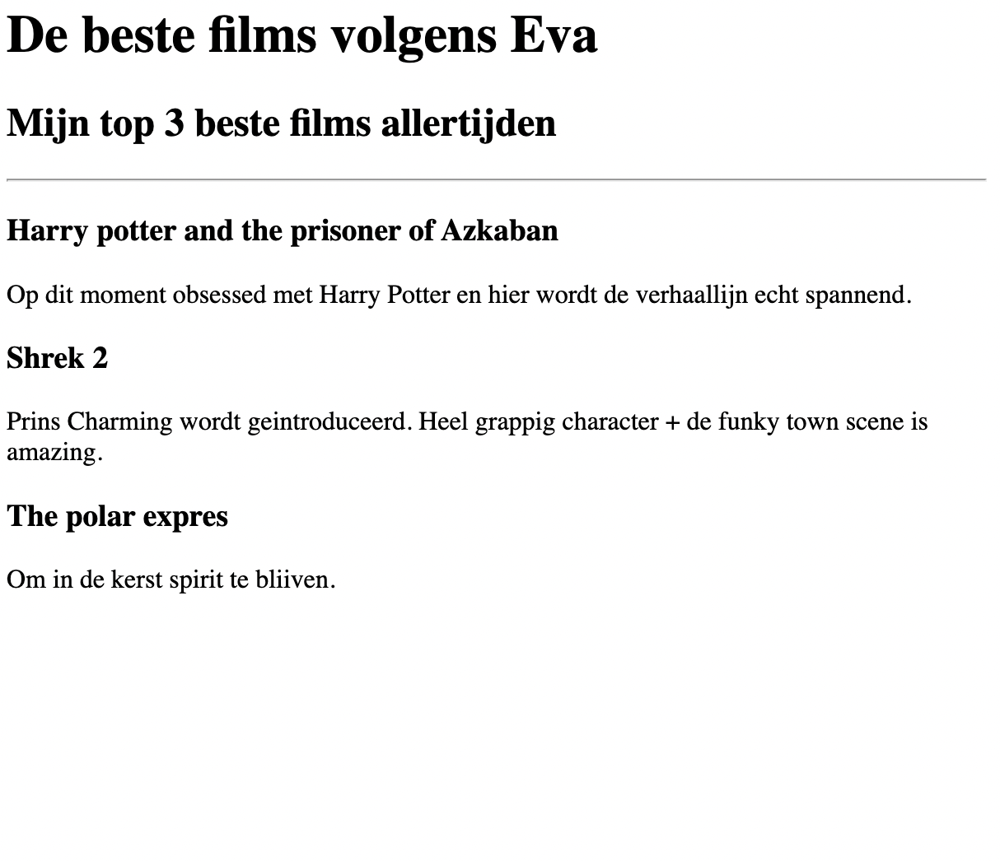
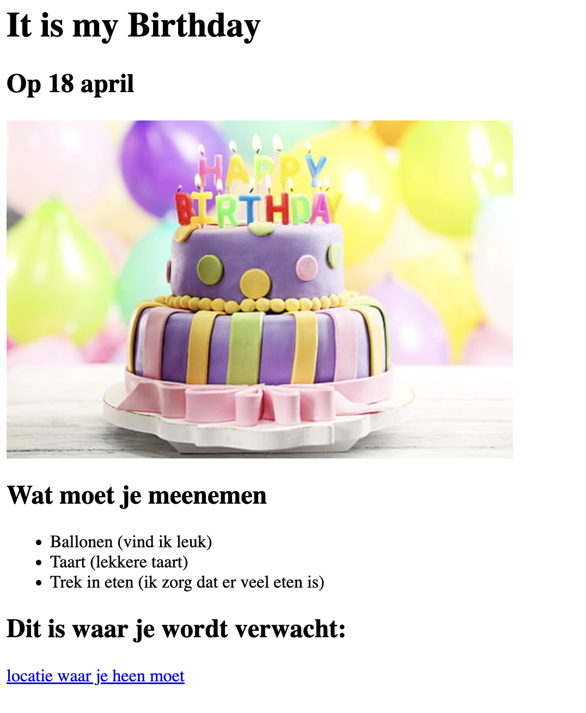

Portfolio van Eva
Ik ben een web developer
Favoriete films project
Een overzicht van de films die ik nu leuk vind

Uitnodiging voor verjaardag
Een uitnodiging voor een verjaardagsfeestje

Over mij
Voor als je nog niet genoeg hebt gehad van mij
Contact opnemen
Mij wel bellen